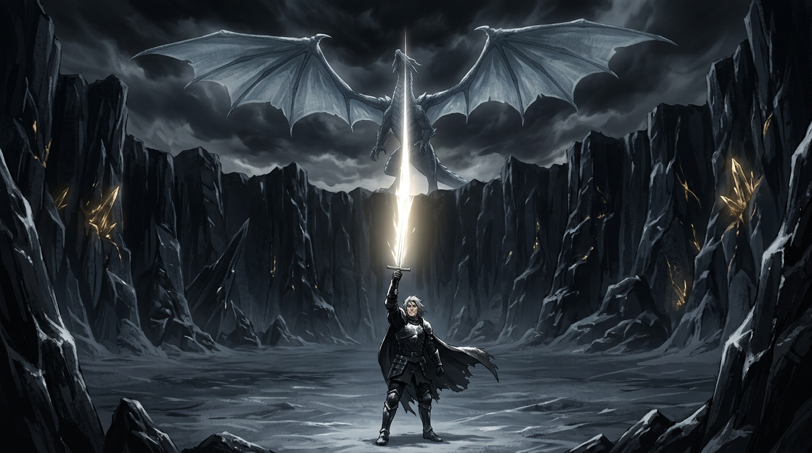
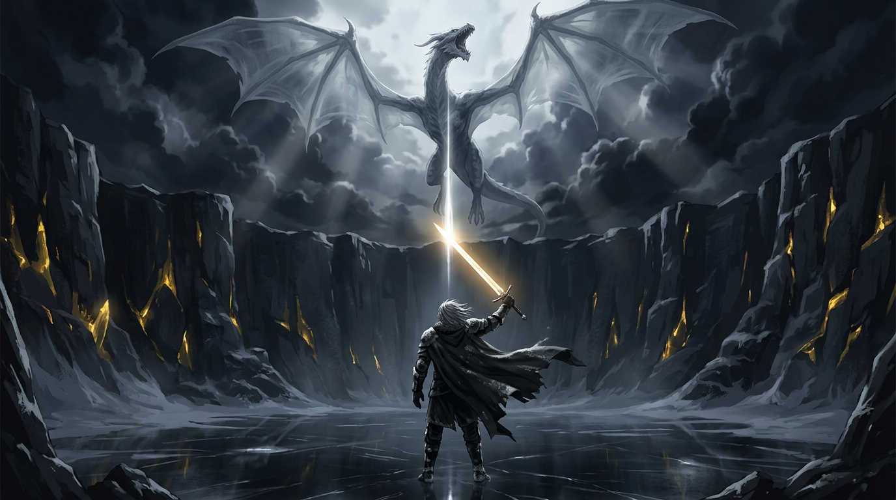
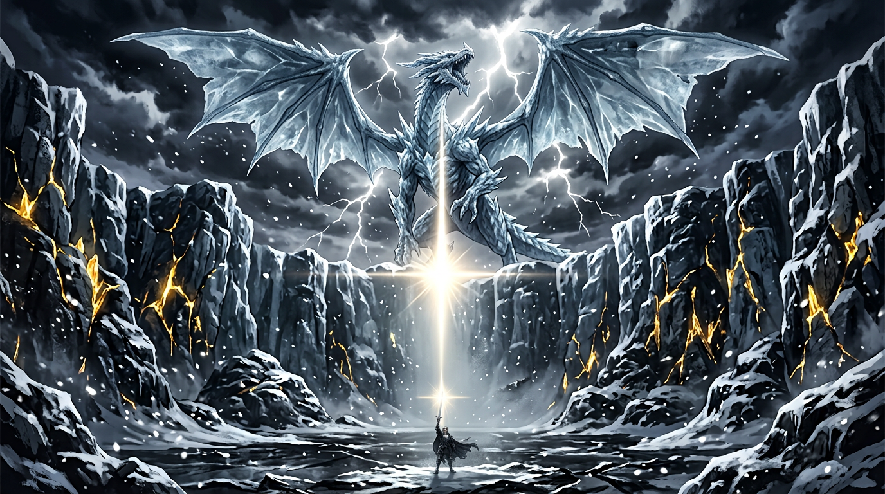
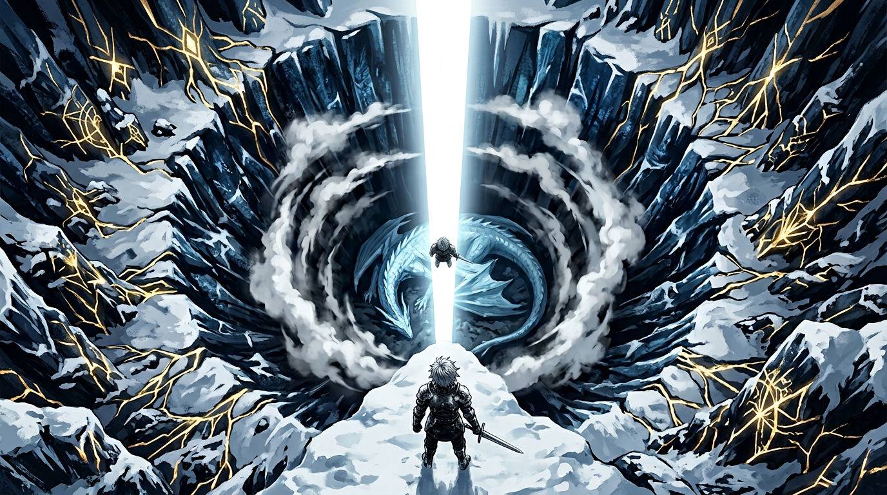
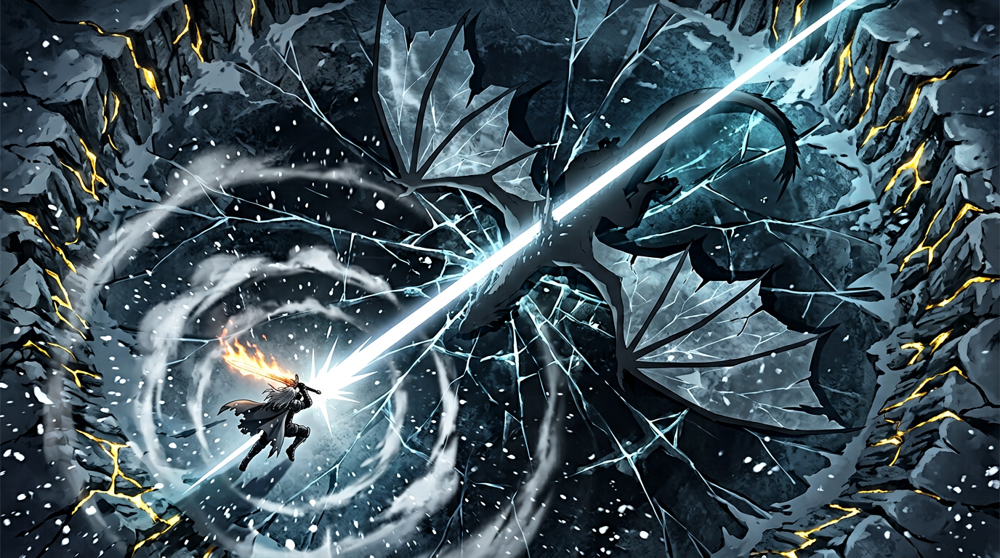
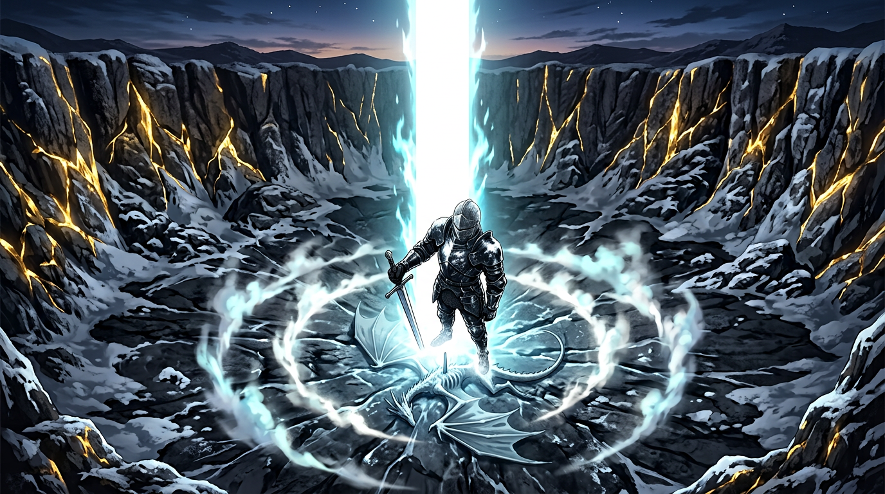
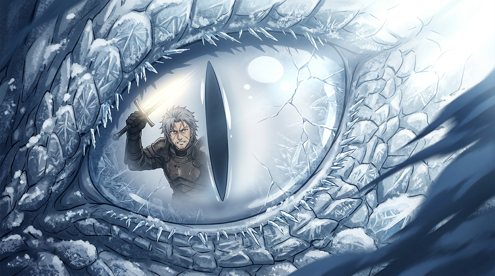
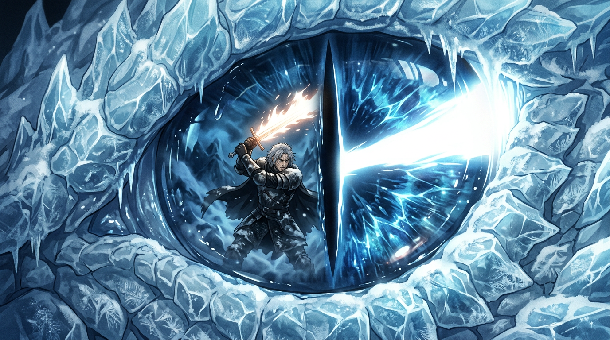
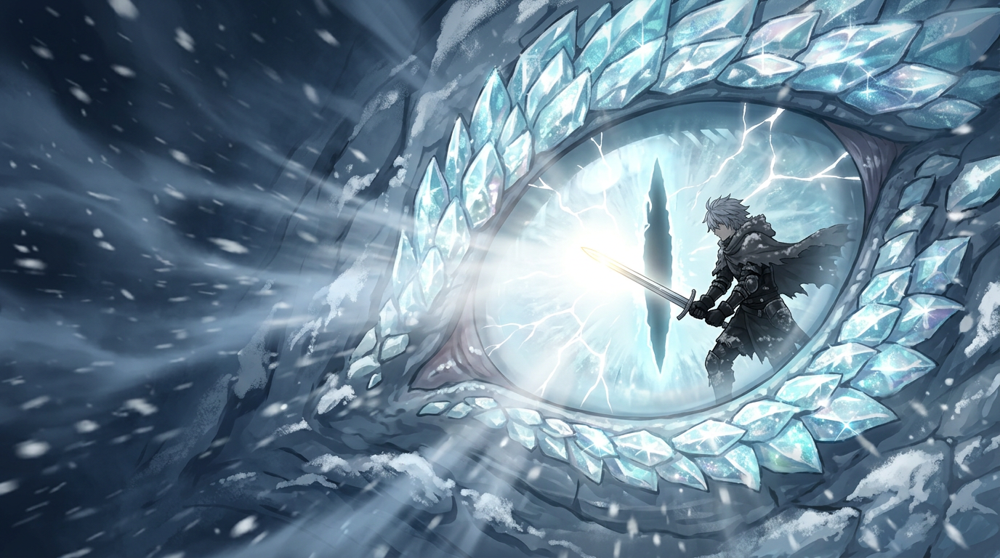

三条提示词，各出三张。人物已换为新设定（原「维尔霍大公」→ 银灰乱发、硬朗疤痕面孔的黑色铠甲剑士），其余场景设定（安魂盆地、冰龙 Syracuse、骨翼、白金光柱、金色晶脉、无其他具名角色）保持不变。
EXTREME WIDE · Requiem Basin · tiny armored swordsman raises a sun-bright silver sword; colossal ice dragon Syracuse with translucent bone wings rears above; vertical pillar of cruel white light just forming; dead crystal veins waking gold; black heavy clouds.

requiem_basin_wide_1.png
requiem_basin_wide_2.png
requiem_basin_wide_3.pngBIRD'S-EYE TOP-DOWN · one perfect white light column splits the frozen hollow in two; tiny swordsman at its origin; ice dragon a pale shape pierced through the chest; melted snow rising as steam rings; gold-lit crystal veins; sacred geometry.

requiem_basin_top_1.png
requiem_basin_top_2.png
requiem_basin_top_3.pngDRAGON-SCALE CLOSE-UP · huge pale vertical pupil filling half the frame, mirroring the tiny swordsman with his sun-sword; white light already flooding into the eye; ice-crystal scales; dark-blue fog tearing apart.

dragon_eye_1.png
dragon_eye_2.png
dragon_eye_3.png